Описание интерфейса ALEPIZ
Доступ к ALEPIZ осуществляется через Web интерфейс. Интерфейс ALEPIZ создан для использования на устройствах с различным разрешением и ориентацией экрана. Это могут быть смартфоны, планшеты, ноутбуки и стационарные компьютеры. Адаптация интерфейса происходит автоматически.
Интерфейс, для экрана смартфона
Интерфейс, для экрана планшета
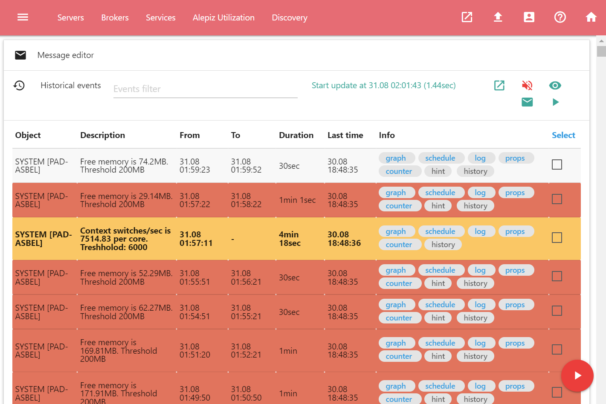Интерфейс, для экрана ноутбука или персонального компьютера
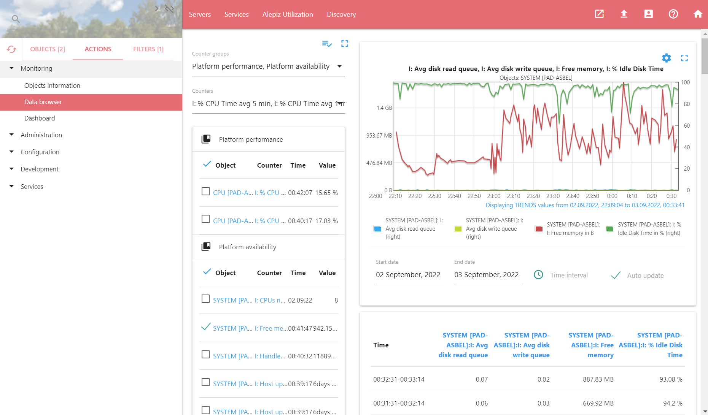Списки OBJECTS, ACTIONS и FILTERS
Шторка со списками OBJECTS, ACTIONS и FILTERS находятся слева. Если она скрыто, то вызывается нажатием на иконку menu в левом верхнем углу экрана. Шторка служит для выбора объектов, фильтрации объектов, выбора действия, а так же для поиска объектов, действий и фильтров.
Для удобства можно переключаться между режимами отображения шторки со списками. Для этого служат элементы управления, которые находятся в правом верхнем углу шторки.
Элементы code_off и code служат для переключения между режимом фиксации шторки в открытом положении и режимом, когда шторка автоматически скрывается а действие занимает всю область экрана.
Элементы keyboard_arrow_right и keyboard_arrow_left служат для изменения размера шторки. В максимальном режиме на шторке одновременно отображается список объектов и список действий или фильтров, в зависимости от выбора. В уменьшенном режиме на шторке отображается только один из списков OBJECTS, ACTIONS или FILTERS. Между списками необходимо переключаться, нажимая на соответствующую вкладку.
OBJECTS (Объекты)
Вкладка OBJECTS содержит объекты. Объекты - это сущности с уникальными названиями, которые служат для обозначения элементов, предназначенных для мониторинга, управления, группировки других объектов и так далее. Примером объектов могут быть название хоста, группа, объединяющая другие объекты (например, объект Servers, объединяющий серверы), программа, сервис, шаблон со счетчиками и так далее. Можно самостоятельно создавать и удалять объекты, управлять их группировкой и фильтрацией.
Навигация по объектам
При выборе вкладки OBJECTS, название вкладки OBJECTS будет заменено на "TO TOP". При нажатии на нее происходит переход к верхнему уровню объектов.
Если нажать на имя объекта, то появится список вложенных объектов. Если вложенных объектов нет, то объект будет выбран.
Выбор объектов
Для выбора объекта служит элемент Checkbox, который находится слева от каждого объекта. Слева от вкладки OBJECTS находится элемент Checkbox, который позволяет выбрать все объекты, либо отменить выбор.
При выборе объектов в поле со списком объектов появляется счетчик, 7 который показывает, сколько объектов выбрано.
При выборе объектов и переключении на другую вкладку, рядом с надписью OBJECTS отображается количество выбранных объектов.
Буфер обмена для выбранных объектов
Если требуется создать нестандартный список объектов, можно использовать буфер обмена. В него можно последовательно помещать требуемые объекты. Когда в буфере окажутся все необходимые объекты их можно извлечь, создав таким образом требуемый список объектов.
Для того, чтобы поместить объекты в буфер обмена, необходимо их выбрать и нажать на счетчик объектов. 11. Появится иконка, информирующая о том, какое количество объектов находится в буфере обмена. folder. Далее необходимо перейти к другим объектам и добавить их в буфер обмена аналогичным образом. После того, как будут добавлены все необходимые для работы объекты, нажмите на иконку с буфером обмена и объекты отобразятся в виде списка.
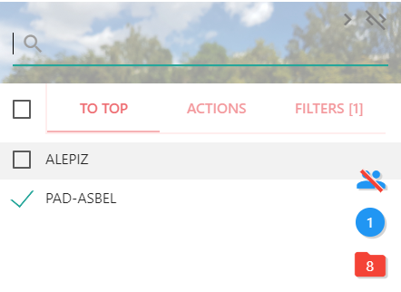Группировка объектов
Для удобства работы с большим количеством однотипных объектов в ALEPIZ реализована функция группировки объектов по их именам за счет использования регулярного выражения, объединяющего несколько объектов, содержащих в имени что-то общее. Если ее настроить и включить, ALEPIZ будет отображать вместо каждого объект по отдельности, одну группу объектов с указанием, сколько объектов находится в группе. Для включения и отключения группировки служит иконка group. Она появляется если настройки для группировки объектов выполнены. Настройка группировки объектов описана в разделе Настройки группировки objectGroup.json. Кроме того, каждый пользователь может настроить собственную группировку с помощью действия Interface Editor.
Например, если есть коммутатор с большим количеством портов. Каждый порт - это отдельный объект, мониторинга. Коммутаторов может быть много и для того, чтобы комфортно работать со всеми портами всех коммутаторов, можно настроить группировку для этих портов с помощью регулярного выражения. ALEPIZ объединит все похожие объекты в группу и отобразит только имена групп с количеством объектов в каждой группе. Имена групп выделяются жирным шрифтом. Для группы можно настроить ее расположение в списке относительно остальных объектов, описание, которое будет появляться при наведении на нее мышкой и цвет. Если объекты не могут быть сгруппированы по настроенным алгоритмам они будут отображаться по отдельности, как обычные объекты.
В примере ниже показаны объекты, которые отвечают за мониторинг платформы PAD-ASBEL без группировки и с группировкой
Взаимодействия между объектами.
Настроенные взаимодействия между объектами позволяют фильтровать объекты в списке OBJECTS. Взаимодействия можно настроить используя действие Objects Interactions. Выбрав два и более объекта и нажав на одном из них можно получить список содержащихся в них объектов, который будет сформирован в зависимости от настроенного взаимодействия между объектами. Это могут быть все объекты, включенные в выбранные родительские объекты. Либо это могут быть только общие объекты для выбранных родительских объектов. Или это могут быть только не общие объекты для выбранных родительских. Подробное описания взаимодействий и их настроек находится на странице помощи для действия Objects Interactions.
Поиск объектов
Над списком OBJECTS находится форма поиска объектов. Если в форме начать набор какой-то части из названия объекта, после ввода нескольких символов в списке OBJECTS появятся объекты, имена которых содержат набранный текст. Сначала производится фильтрация среди отображенных объектов. Если ни один объект не найден, производится поиск среди всех объектов, присутствующих в системе. Если вы работаете с основным интерфейсом ALEPIZ курсор всегда будет находиться в строке поиска, позволяя начать поиск в любое время. При нажатии Tab курсор переместится в строку поиска действий при уменьшенном режиме отображения шторки или в активную вкладку с действием или фильтрами в максимальном режиме шторки. Esc сбрасывает строку поиска и отображает список объектов, которые были до начала поиска
Можно использовать символы "&" (и) и "|" (или) для объединения поисковых запросов в логическое выражение. Вместо символа "|" можно использовать перенос строк или запятую (",").
Для поиска объектов можно использовать шаблоны: "_" - один любой символ и "*" - последовательность из ноля или нескольких любых символов.
При глобальном поиске, если требуется использовать символы "_" или "*" не как шаблоны, а как часть имен объектов, их следует экранировать с помощью символа "\".
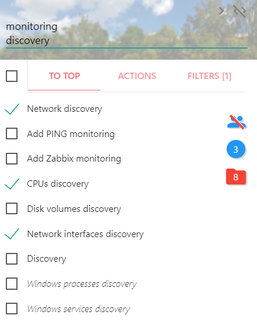ACTIONS (Действия)
Эти компоненты позволяют выполнять действия или предоставлять какую-то информацию. Примером действий могут быть создание объекта в ALEPIZ, администрирование пользователей, просмотр лог файлов, просмотр графика с исторической информации, собранной встроенной системой мониторинга, рестарт сервиса на удаленном сервере, редактирование конфигурационного файла, создание задач, объединяющих другие действия для автоматизации и так далее.
Можно разрабатывать собственные действия для автоматизации процессов.
Действия можно выполнять, запуская их вручную или в составе задачи в автоматическом режиме, в зависимости от произошедших событий. Так же действие может быть выполнено в составе задачи по заданному расписанию.
Вкладка ACTIONS содержит действия, объединенные в группы. При нажатии на выбранном действии, его интерфейс будет показан в основном окне системы.
Левее вкладки ACTIONS находится иконка cached которая служит для перезагрузки текущего действия. При нажатии на иконку происходит освобождение кэша и файл с действием подключается к системе заново. Это можно использовать если необходимо начать работать с обновленным действием.
Поиск действий
Над списком ACTIONS находится форма поиска для действий. Если в форме начать набор какой-то части из названия действия, появятся подсказки из которых можно выбрать требуемое действие. Если ни одно действие не подходит по набираемый текст, ALEPIZ автоматически переключится на поиск объектов. При нажатии Tab курсор так же переместится в строку поиска объектов. Esc сбрасывает строку поиска.
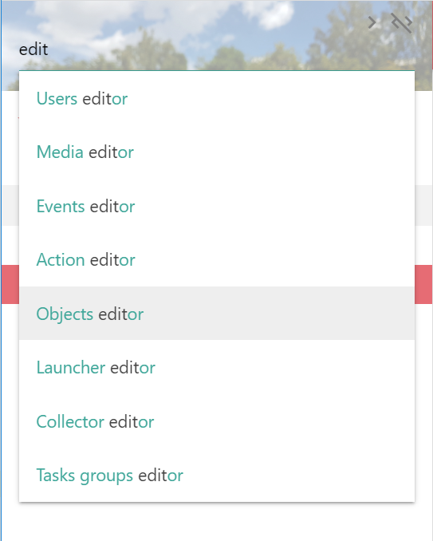FILTERS (Фильтры)
Список FILTERS позволяет устанавливать фильтры для объектов. При использовании фильтров объекты, не удовлетворяющие выбранным фильтрам, не будут отображаться. Администратор может настроить произвольные фильтры на основе свойств объектов, свойств объектов верхнего уровня и полученных исторических данных. Фильтры применяются только к объектам, у которых есть соответствующие фильтрам свойства или счетчики для получения исторических данных. Объекты, у которых нет соответствующих свойств или счетчиков будут отображаться независимо от установленных фильтров. Если выбраны фильтры, рядом с надписью FILTERS появляется их количество.
Можно настроить предустановленные фильтры для пользователей в зависимости от роли пользователя. В этом случае фильтры будут автоматически включаться при обновлении пользователем страницы.
Настройка фильтров описана в разделе Настройка фильтрации объектов в objectFilters.json. Кроме того, каждый пользователь может настроить автоматическое включение фильтров при загрузке страницы с помощью действия Interface Editor.
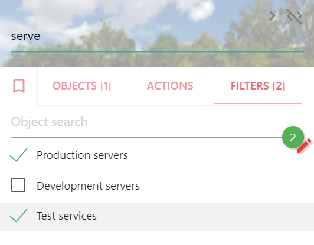При выборе фильтров отображается счетчик количества выбранных фильтров 11 По умолчанию, несколько фильтров связываются логическим оператором "И". Можно поменять логический оператор. Для этого необходимо нажать на счетчик фильтров и в появившемся редакторе фильтров нажать на оператор, который необходимо поменять. Поддерживаются операторы "И" и "ИЛИ".
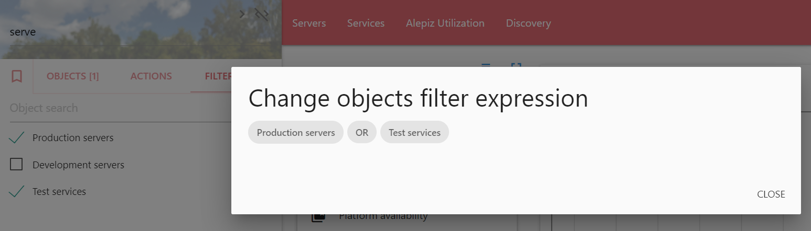Левее вкладки FILTERS находится иконка bookmark_border которая служит сброса выбранных фильтров и включению фильтров, предустановленных для пользователя
Над списком фильтров находится многострочное поле для поиска объектов. При вводе в строке поиска производится фильтрация объектов, отображенных в списке.
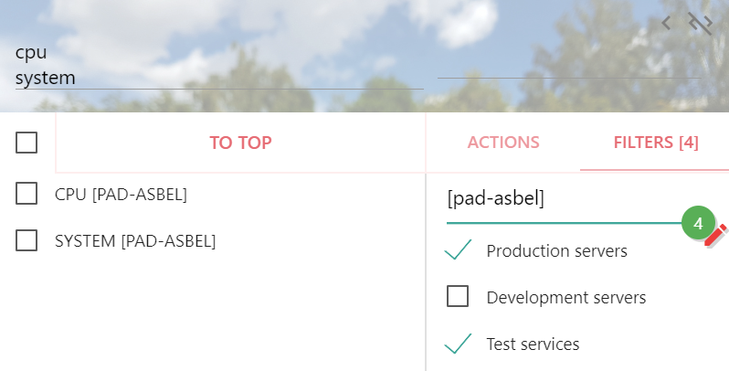Поиск фильтров
Над вкладкой FILTERS находится форма поиска фильтров. Если в форме начать набор какой-то части из названия фильтра, после ввода нескольких символов в списке FILTERS появятся фильтры, имена которых содержат набранный текст. При нажатии Tab курсор переместится в строку поиска объектов. Esc сбрасывает строку поиска.
Ссылки в навигационной строке
Для удобства работы можно настроить ссылки. Они появятся в навигационной панели сверху экрана. Ссылки используются для быстрой навигации по объектам или для перехода к определенной web странице. Для навигации по объектам можно настроить отображение объектов, связанных с объектами верхнего уровня. Либо отображение объектов, совпадающих с поисковой строкой. Либо отображение строго определенных объектов.
Настройка ссылок описана в разделе Описание настроек ссылок navBarLinks.json. Кроме того, каждый пользователь может настроить собственные ссылки с помощью действия Interface Editor.
Иконки навигационной строки
Иконки находятся в правом верхнем углу экрана
open_in_new дублирует URL текущей вкладке в новую вкладку в браузере для дублирования текущего окна ALEPIZ.
file_upload открывает окно с информацией о процессе выполнения действий.
account_box открывает диалог с помощью которого можно авторизоваться или сменить пароль в системе
help_outline открывает контекстную страницу помощи в зависимости от выбранного действия
home открывает домашнюю страницу Web сайта ALEPIZ
Окно с информацией о процессе выполнения действий
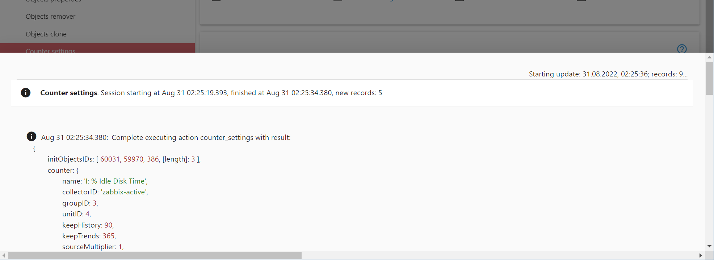Окно вызывается при запуске действия или при нажатии на иконку file_upload, которая находится в правом верхнем углу экрана. Данные представлены в виде последовательности записей и представляет информацию по отображению или по выполнению действия.
Информация разбита на разделы, каждый из которых отвечает за выполнение определенного действия. В зависимости от настроенного уровня отладки, количество отображаемой информации может меняться. При нажатии на заголовок раздела, содержимое раздела будет показано или скрыто. Информация обновляется автоматически, пока открыто окно с информацией
Кнопки управления
Кнопки управления действием находятся справа снизу и отображаются в зависимости от прав пользователей. Их наличие регулируется правами на выполнение действия и на возможность создать из действия задачу. Если ни одного права нет, кнопки отображаться не будут.
play_arrow Выполнить текущее действие (Ctrl+Enter)
После того, как в выбранном действии были установлены все параметры, необходимо запустить действие на выполнение. Изменения произойдут только после нажатия кнопки выполнения действия, до этого момента никакие изменения параметров действия не приведут к реальным изменениям, которые выполняет действие. Во время выполнения действия откроется окно с информацией о деталях выполнения действия. По этой информации можно определить, что действие было выполнено корректно и при выполнении действия не произошло никаких ошибок.
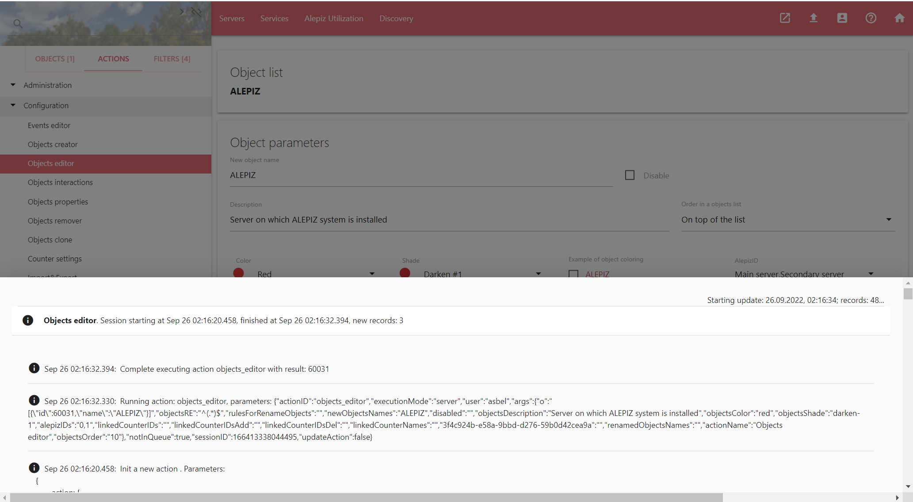Для быстрого выполнения действия можно нажать <Ctrl> + <Enter>. В этом случае действие будет запущено и появится соответствующее оповещение. Окно с детальной информацией о выполнении действия открыто не будет. Информацию о выполнении действия всегда можно посмотреть, нажав на иконку file_upload в правом верхнем углу экрана.
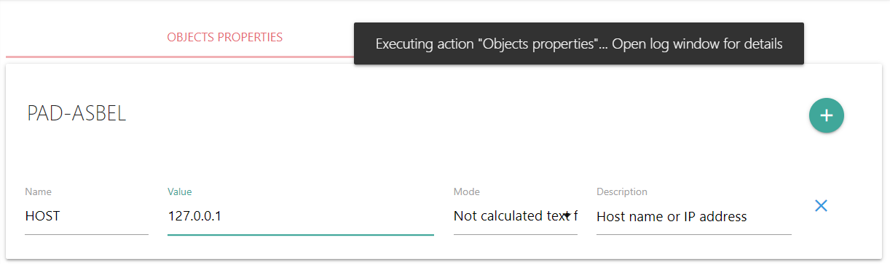playlist_add Создать из действия задачу
Кнопка отображается в зависимости от прав пользователя, либо как основная кнопка, если прав на выполнение действия нет, либо как вспомогательная кнопка, которая появляется при наведении на кнопку выполнения действия. При нажатии на кнопку из текущего действия создается задача, либо, если задача уже была создана, текущее действие добавляется к созданной задаче.
Задачи служат для создания автоматизации. Задача - это набор действий с определенными параметрами, которые будут выполняться в заданной последовательности. Для создания задачи необходимо установить необходимые параметры действия и добавить его в задачу. Далее повторить операцию по добавлению других действий с установленными параметрами в задачу. В результате получится задача, состоящая из нескольких действий. Задачу можно отредактировать с помощью действия Task maker и выполнить ее любым из доступных способов:
- Запустить задачу вручную
- Установить время выполнения, в которое задача автоматически запустится
- Назначить условие, при соблюдении которого задача будет запущена
- С помощью действия Counter settings, используя сборщик Task runner, создать счетчик, запускающий задачу. Счетчик может зависеть от другого счетчика и при выполнении заданных условий, запускать зависимый счетчик с задачей на выполнение. В этом случае в задачу можно передавать динамически сформированные параметры.
В качестве примера для задачи может быть обновление какого-то прикладного сервиса, состоящее из действий "Обновить файлы сервиса", "Применить скрипт SQL к базе данных сервиса" и "Отредактировать файл конфигурации сервиса". После создания такой задачи, можно назначить условие для ее выполнения: остановка сервиса. Как только сервис будет остановлен, задача по обновлению сервиса будет выполнена автоматически.
Другим примером может служить создание объектов в системе для мониторинга автоматически найденных хостов в сети. Для этого необходимо с помощью действия Counter settings создать счетчик, который, используя сборщик Objects discovery, будет искать объекты в сети. Далее создать еще один зависимый счетчик, который с помощью сборщика Task runner запустит предварительно созданную задачу по созданию найденных объектов, настройке свойств объектов и подключению к ним необходимых счетчиков для сбора данных.
Так же можно создать задачу, которая будет осуществлять обслуживание сервисов, например, резервное копирование, упаковку и ротацию логов, обслуживание базы данных и так далее. Для этого можно создать задачу или несколько задач, которые будут автоматически запускать действия по какому-то условию, например "остановка сервиса".
Информация в адресной строке браузера
Адресная строка браузера содержит информацию о выбранных объектах в списке OBJECTS, выбранном действии в списке ACTIONS и параметрах выбранного действия. Для информации о состоянии объектов и действий используются параметры u,c (для информации об объектах) и a (для информации о действии)
u - список выбранных объектов
c - список невыбранных объектов
a - действие
В примере ниже отображается действие objects_creator (a=%2Factions%2Fobjects_creator). Не выбраны объекты Object17, Object18 и Object19 (u=Object17%2CObject18%2CObject19). Выбраны объекты Object15 и Object16 (c=Object15%2CObject16)
https://localhost/?a=%2Factions%2Fobjects_creator&u=Object17%2CObject18%2CObject19&c=Object15%2CObject16
Кроме информации о состоянии списков в строке браузера может быть информация о параметрах текущего действия. В примере ниже отображается информация о параметрах, заданных администратором для построения графика действия Data browser. Если отправить содержимое командной строки и у получателя есть соответствующие права, при открытии полученной ссылки в своем браузере он увидит точно такой же график.
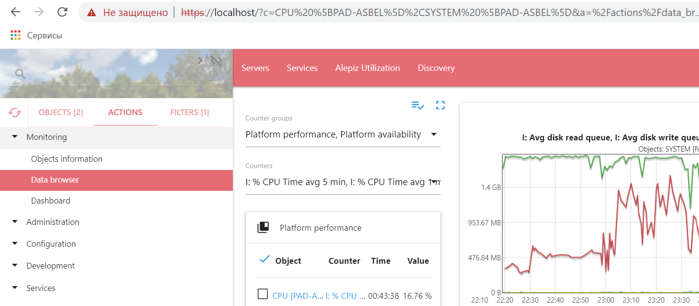